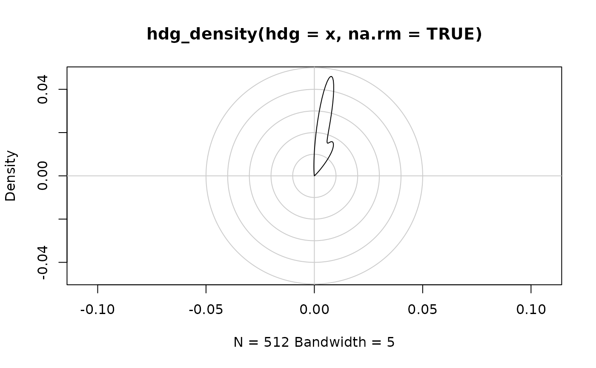
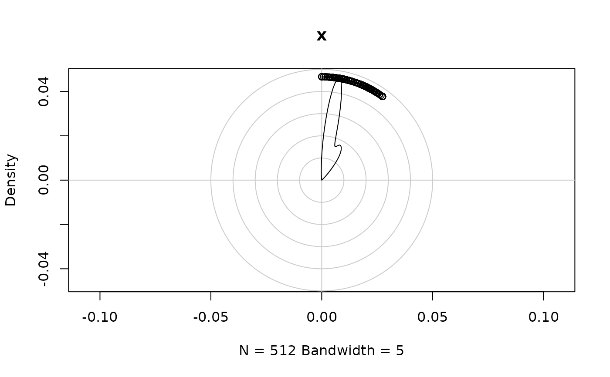

Computes an approximate density useful for visualization. For proper
circular densities, use hdg_circular() and circular::density.circular().
hdg_density(
hdg,
bw = 5,
kernel = c("gaussian", "epanechnikov", "rectangular", "triangular", "biweight",
"cosine", "optcosine"),
weights = NULL,
n = 512,
na.rm = FALSE,
...
)
# S3 method for class 'hdg_density'
plot(x, main = NULL, xlab = NULL, ylab = NULL, axes = TRUE, ...)
hdg_plot(
hdg,
density = hdg_density(hdg, na.rm = TRUE),
main = NULL,
xlab = NULL,
ylab = NULL,
axes = TRUE,
...
)A heading in degrees, where 0 is north,
90 is east, 180 is south, and 270 is west. Values
outside the range [0-360) are coerced to this range
using hdg_norm().
The bandwidth of the smoothing kernel. Automatic methods are not available, so you will have to set this value manually to obtain the smoothness you want.
A kernel algorithm to use
numeric vector of non-negative observation weights,
hence of same length as x. The default NULL is
equivalent to weights = rep(1/nx, nx) where nx is the
length of (the finite entries of) x[]. If na.rm = TRUE
and there are NA's in x, they and the
corresponding weights are removed before computations. In that case,
when the original weights have summed to one, they are re-scaled to
keep doing so.
Note that weights are not taken into account for automatic
bandwidth rules, i.e., when bw is a string. When the weights
are proportional to true counts cn, density(x = rep(x, cn))
may be used instead of weights.
the number of equally spaced points at which the density is
to be estimated. When n > 512, it is rounded up to a power
of 2 during the calculations (as fft is used) and the
final result is interpolated by approx. So it almost
always makes sense to specify n as a power of two.
logical; if TRUE, missing values are removed
from x. If FALSE any missing values cause an error.
For hdg_density(), dots are unused; for plot.hdg_density(),
dots are passed to graphics::lines(); for hdg_plot(), passed to
graphics::points()
the data from which the estimate is to be computed. For the default method a numeric vector: long vectors are not supported.
See graphics::plot().
A hdg_density() object.
An object identical to stats::density() but with class
"hdg_density".
x <- head(kamloops2016$wind_dir, 1000)
hdg_density(x, na.rm = TRUE)
#>
#> Call:
#> hdg_density(hdg = x, na.rm = TRUE)
#>
#> Data: x (512 obs.); Bandwidth 'bw' = 5
#>
#> x y
#> Min. : 0 Min. :0.000e+00
#> 1st Qu.: 90 1st Qu.:0.000e+00
#> Median :180 Median :0.000e+00
#> Mean :180 Mean :2.794e-03
#> 3rd Qu.:270 3rd Qu.:2.000e-09
#> Max. :360 Max. :4.664e-02
plot(hdg_density(x, na.rm = TRUE))

hdg_plot(x)
